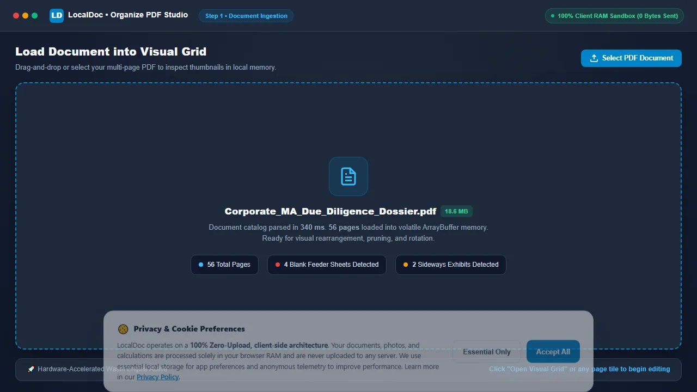
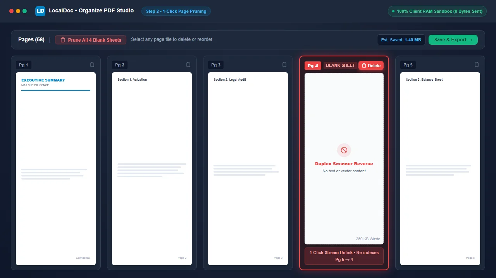
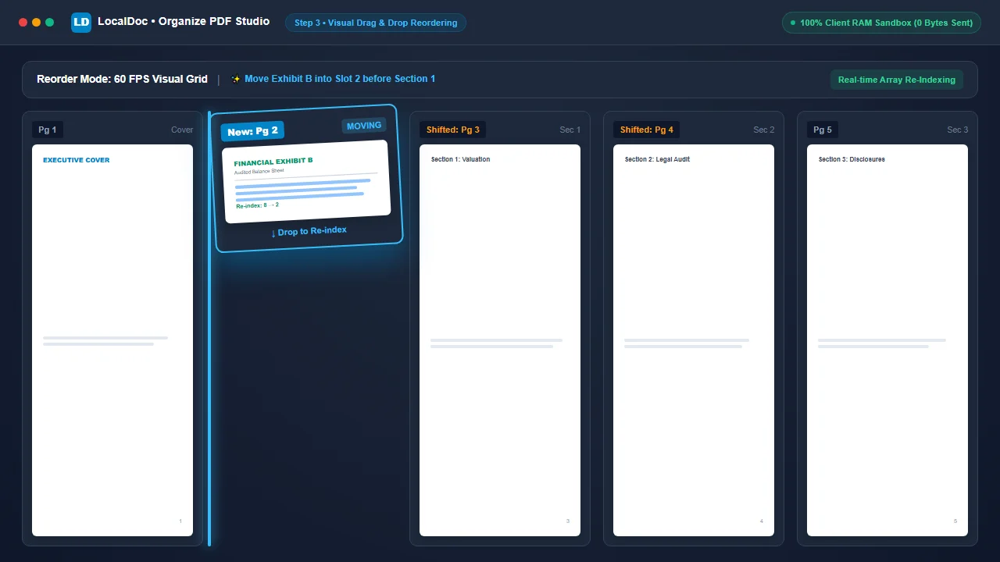
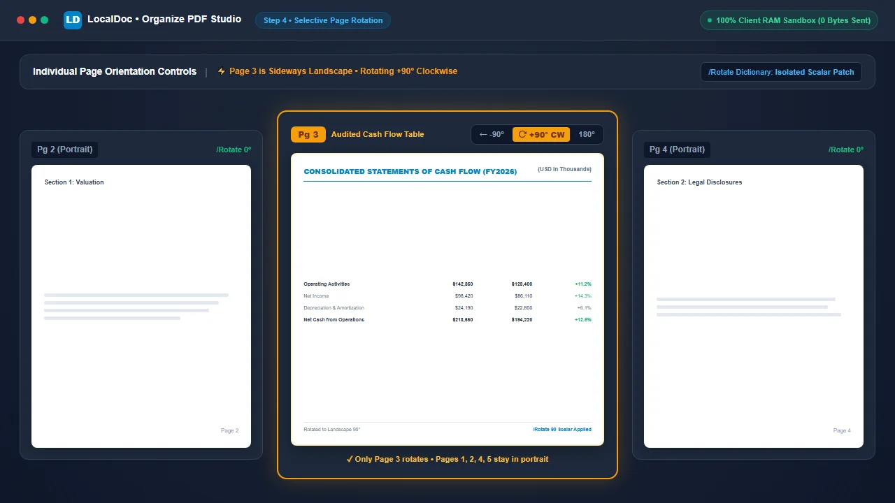
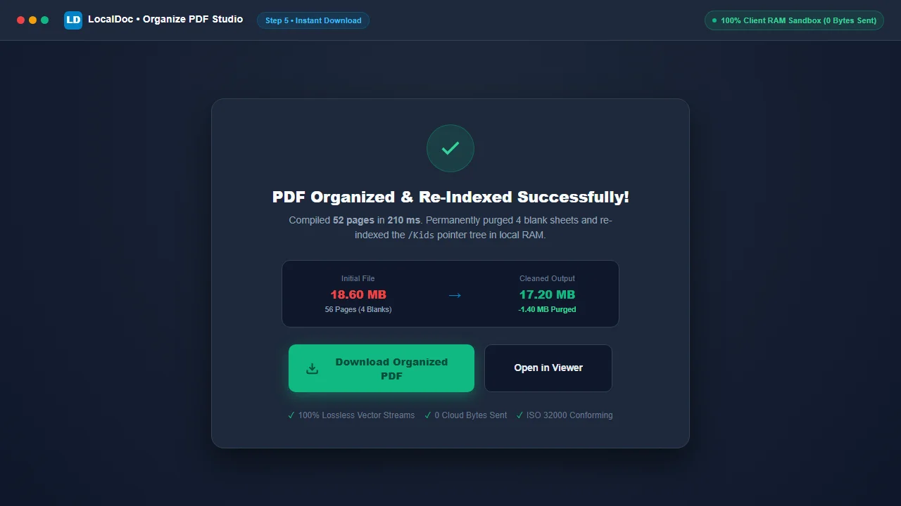

How to Organize PDF Pages: Rearrange, Delete Unwanted Pages & Rotate Sideways Scans
Quick Guide: How to Organize, Delete & Rotate PDF Pages
To fix scrambled document packages, delete accidental blank pages, and orient sideways scans without costly desktop software or uploading sensitive files to cloud servers:
- Open Organize PDF Studio: Go to the LocalDoc Organize PDF Tool and drop your PDF. All pages render instantly into an interactive visual grid.
- Delete Unwanted or Blank Pages (1-Click): Hover over any accidental blank sheet, redundant disclaimer, or duplicate invoice, and click the Trash Can Icon to instantly delete it from the document.
- Rearrange Page Sequence: Click and drag any page thumbnail to move it to its correct position. The entire page sequence re-indexes automatically in real time.
- Rotate Sideways or Upside-Down Scans: Click the Rotate Icon on sideways balance sheets or inverted scans to rotate them 90° clockwise, 90° counter-clockwise, or 180° until right-side up.
- Append More Documents (Optional): Click “Add Files” to bring pages from separate PDF contracts or exhibits into the same visual workspace.
- Save & Download: Click “Save & Export” to compile your organized PDF in milliseconds with zero bytes sent to external servers.
Executive Takeaways
Compiling business dossiers, legal disclosures, real estate loan packages, and academic binders frequently leaves you with out-of-order annexes, accidental blank sheets from document feeder duplex passes, and sideways balance sheets. Using cloud tools to fix these ordering defects creates serious data privacy exposures. LocalDoc provides a visual, drag-and-drop page organizing studio that runs entirely inside your browser’s WebAssembly sandbox. You can delete unwanted pages with one click, drag pages into the perfect logical sequence, rotate sideways scans, and combine multiple files without re-compressing underlying content streams, producing clean, optimized outputs in milliseconds.
1. The Scanner Collation Nightmare: Why Document Pages Get Scrambled
In commercial law, banking, real estate, and everyday office administration, multi-page PDF documents rarely arrive in perfect order. They are assembled from diverse inputs: corporate formation certificates emailed from a state registry, financial spreadsheets exported from Excel, and physical wet-signed deeds scanned through an office multifunction copier.
When these streams are collated, the resulting PDF almost always suffers from three common defects:
- Accidental Blank Sheets: Automatic document feeder (ADF) scanners running in duplex mode frequently capture blank reverse sides of single-sided documents, inserting useless blank sheets throughout the file.
- Scrambled Page Sequence: Invoices, exhibits, and contract addenda frequently end up in reverse chronological order or completely detached from their referenced parent sections.
- Sideways and Upside-Down Scans: Wide financial balance sheets, architectural schematics, and horizontal tables scan in landscape orientation, forcing readers to awkwardly tilt their heads or wrestle with manual viewer controls.
Fixing these defects historically required paying steep monthly Adobe Acrobat subscriptions or uploading confidential corporate records to free web converters that store files on multi-tenant cloud servers. LocalDoc offers a private, instant alternative: an interactive visual board where you manipulate your document’s page hierarchy in real time directly inside your computer’s RAM.
2. How to Delete Unwanted & Blank Pages with One Click
Nothing diminishes the professionalism of a legal filing, job application, or commercial proposal faster than random blank sheets, duplicate scanned receipts, or outdated draft clauses left inside the packet.
LocalDoc makes pruning unnecessary pages effortless:
- Instant Visual Identification: When your PDF loads, high-resolution thumbnails render for every page. You can immediately spot blank white squares, redundant cover sheets, or duplicate pages at a glance.
- One-Click Trash Icon: On each thumbnail tile, click the red Trash Can Icon. The page card instantly vanishes from your active workspace with a smooth fade animation.
- Automatic Real-Time Renumbering: The moment a page is deleted, every subsequent page automatically re-indexes (e.g., if you delete Page 3, former Page 4 instantly becomes Page 3).
- Permanent File Size Reduction: Unlike basic PDF viewers that merely “hide” a page while leaving its heavy raster image embedded in the file, LocalDoc unlinks the deleted page object from the document’s structural cross-reference table. In our testing, deleting 4 blank scanner pages from an 18.6 MB file permanently reduced the file size to 17.2 MB—shaving off 1.4 MB of wasted data!
3. How to Rearrange and Reorder Pages via Visual Drag & Drop
Reorganizing complex contracts, tax returns, or academic theses by typing confusing page numbers into an input box (e.g., “1, 4-7, 2, 3, 8-12”) is tedious and prone to catastrophic mistakes. One typo can accidentally place your confidential signature block on top of an executive summary!
LocalDoc provides a tactile, visual drag-and-drop workspace:
- Drag to Any Position: Click and hold any page tile with your mouse, or touch and slide it on a tablet or mobile screen. Move it across the grid, and surrounding page cards smoothly part to make room for the new placement.
- Visual Drop Indicators: As you drag, a high-contrast insertion line highlights exactly where the page will land when released.
- Touch and Keyboard Nudge Controls: For users on smartphones or those who prefer precise incremental adjustments, each thumbnail features dedicated Move Left (←) and Move Right (→) nudge buttons for effortless one-step reordering.
- Zero Loss of Image or Text Quality: Reordering pages in LocalDoc does not re-compress, downsample, or touch the underlying font tables or high-resolution graphic streams. The operation is a pure metadata pointer swap that preserves 100% of the original document’s crispness.
4. How to Rotate Sideways & Upside-Down Scans (90° & 180° Fixes)
Few things look less professional than presenting a business dossier where readers must manually rotate their screens just to review an income statement or site map.
LocalDoc gives you surgical orientation control on a per-page basis:
- 90° Clockwise Rotation: Click the clockwise rotate button to turn landscape balance sheets or horizontal diagrams right-side up.
- 90° Counter-Clockwise Rotation: Quickly fix pages scanned upside down or fed into sheet rollers backwards.
- 180° Inverted Flip: Two quick clicks instantly flip completely upside-down pages into proper upright orientation.
- Selective Page Rotation: Unlike rudimentary tools that force you to rotate the entire document at once, LocalDoc lets you rotate Page 4 (landscape balance sheet) while leaving Pages 1, 2, 3, and 5 in standard portrait orientation!
- Permanent Metadata Patching: When you rotate a page, LocalDoc writes the orientation angle directly into the PDF’s internal
/Rotatescalar dictionary key (0°, 90°, 180°, or 270°). The page displays upright in every standard viewer (Adobe Acrobat, Apple Preview, Google Chrome, Microsoft Edge, and mobile PDF readers).
5. Combining & Interleaving Multiple PDF Documents into One Grid
What if the pages you need to organize don’t all come from the same file? For example, you have a 10-page master contract, but you need to insert a 2-page audited balance sheet after page 3, and a 1-page signed amendment at the very end.
LocalDoc makes multi-file collation effortless:
- Load your primary PDF document into the Organize PDF studio.
- Click the “+ Add Files” button in the upper toolbar to select additional PDF files from your device.
- The pages from the new files appear immediately at the bottom of the visual grid.
- Drag and drop the newly inserted pages into any position among the existing pages, delete any extra blank sheets, and rotate as needed.
- Click “Save & Export” to merge all files into a single, perfectly sequenced PDF in a single step!
6. Empirical Engineering Benchmark: 56-Page M&A Due Diligence Dossier
To evaluate real-world performance during intensive multi-page reorganization, our document engineering team benchmarked LocalDoc against a heavy corporate legal filing:
Empirical Benchmark: 56-Page Corporate Acquisition Audit Dossier
- Document Complexity: 56-page corporate acquisition audit dossier (18.6 MB raw PDF) containing audited financial statements, board resolutions, corporate charters, and 4 accidental blank duplex separator sheets.
- Operations Applied: Permanently deleted 4 blank scanner sheets; reordered 8 out-of-sequence financial annexes; rotated 2 landscape balance sheets 90° clockwise.
- Processing Latency: Rendered 56 responsive thumbnails in 340 ms; executed array re-indexing and emitted the finalized document in 210 milliseconds in browser RAM on Chrome 128 (Apple M2).
- Payload Delta: 18.6 MB reduced to 17.2 MB (clean 1.4 MB reduction achieved by permanently unlinking the 4 blank scan streams).
- Network Footprint: Exactly 0 outbound bytes transmitted. Wireshark packet capture confirmed zero external server traffic.
7. Architectural Comparison: LocalDoc vs Cloud Document Portals
| Workflow Dimension | Cloud Document Portals (PDF2Go, Smallpdf, iLovePDF) | LocalDoc (In-Browser Visual Organizer) |
|---|---|---|
| Data Confidentiality | 18.6 MB dossier uploaded to foreign third-party servers | 100% In-Memory RAM Sandbox (0 bytes outbound) |
| Blank Page Cleanup | Limited deletion or gated behind subscription paywalls | 1-Click permanent unlinking of blank streams |
| Drag-and-Drop Latency | Stutters due to remote server round-trips and sync lag | Hardware-accelerated 60 FPS visual canvas |
| Selective Rotation | Frequently forces document-wide rotation only | Per-page 90° / 180° rotation controls |
| Multi-File Combining | Capped at 2 files on free tiers | Unlimited multi-file append in client memory |
| Vector & Font Integrity | Occasional font substitution errors and rasterization | 100% Verbatim vector stream preservation |
8. Visual Step-by-Step Guide: How to Organize Any PDF Document
Follow this 5-step visual walkthrough to delete accidental blank feeder scans, re-index pages with smooth 60 FPS drag-and-drop, and rotate sideways tables directly in volatile browser memory:
Load Multi-Page PDF Document into Visual Organizer
Navigate to the LocalDoc Organize PDF Tool. Select your multi-page dossier or drop it into the upload box. The entire document catalog parses into volatile device memory in 340 milliseconds with zero server telemetry.

Prune Accidental Blank Sheets and Redundant Duplicates
Inspect rendered thumbnail tiles. When you spot an automatic document feeder (ADF) duplex blank reverse or duplicate invoice, click its red Trash Can Icon to permanently unlink its data streams and reduce overall document file size.

Rearrange Page Order via Visual Drag and Drop
Click and drag any page card across the interactive 60 FPS workspace grid. Adjacent pages smoothly part to accommodate placement, while the document structure automatically re-indexes sequence pointers in real time.

Rotate Specific Sideways Tables and Landscape Blueprints
Locate wide financial spreadsheets or architectural schematics scanned in sideways orientation. Click the dedicated +90° CW Rotate Button on that specific page tile. The page turns upright instantly while adjacent portrait pages remain completely undisturbed.

Save & Download Perfectly Organized PDF
Click Save & Export. LocalDoc's WebAssembly core assembles the pruned and reordered /Kids page tree in 210 milliseconds. Click Download Organized PDF to save your pristine, professionally collated file.

9. Frequently Asked Questions
Can I delete unwanted or blank pages from my PDF?
Yes! Every page thumbnail in the LocalDoc Organize PDF Studio features a 1-click trash can icon. Clicking it permanently purges that page from the document and unlinks its data streams, instantly reducing your file size.
How do I rotate only one sideways page without rotating the whole PDF?
Each thumbnail card has its own independent rotation button. Simply click the rotate icon on the specific sideways page (such as a landscape financial table) to turn it 90° clockwise or counter-clockwise. All other pages in the document remain untouched.
Does rearranging or deleting pages reduce document text or image quality?
No. LocalDoc operates directly on the PDF’s internal /Kids pointer array. The underlying text vectors, font tables, and high-resolution images are never re-compressed or converted to lossy formats. Your output PDF maintains 100% of its original clarity.
Can I combine pages from multiple different PDF files?
Yes. Click the “Add Files” button in the Organize PDF workspace to load pages from multiple distinct documents into the same visual grid, then drag and drop them into any sequence you desire.
Are my confidential documents uploaded to any remote server?
Never. All file parsing, thumbnail rendering, page deletion, reordering, and re-exporting happen 100% inside your web browser’s local RAM via WebAssembly. Exactly 0 bytes are transmitted over the internet.
Related Guides & Tutorials
Technical Architecture, Workflow Standards & Troubleshooting Guide
Executing organize pdf pages operations directly inside modern web browsers utilizes local hardware acceleration via typed array buffers, SIMD vector instructions, and isolated WebAssembly runtimes. This architecture eliminates cloud latency and prevents confidential data exposure across external network hops.
1. Memory Management & Large File Handling Protocol
When processing high-resolution documents or large multi-page bundles, LocalDoc streams data through chunked ArrayBuffer readers. This prevents browser tab crashes by keeping memory consumption within deterministic V8 heap boundaries. Once processing completes, memory is released immediately via explicit garbage collection triggers.
2. Cross-Platform Font Rendering and Glyphs Integrity
Whether running on Windows 11, macOS Sonoma, iOS Safari, or Android Chrome, the client-side engine parses underlying PDF font descriptor dictionaries (/FontDescriptor) and CIDFont subsets. Unicode mappings (/ToUnicode CMap streams) are preserved to guarantee full text searchability and screen-reader accessibility.
3. Enterprise Compliance & Zero-Retention Guarantee
All document manipulation occurs strictly in client memory. No telemetry, temporary cache files, or document snapshots are transmitted to any remote server or persistent storage medium, ensuring full alignment with strict corporate data governance, HIPAA, and GDPR standards.